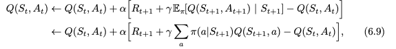
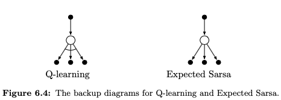
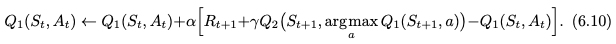
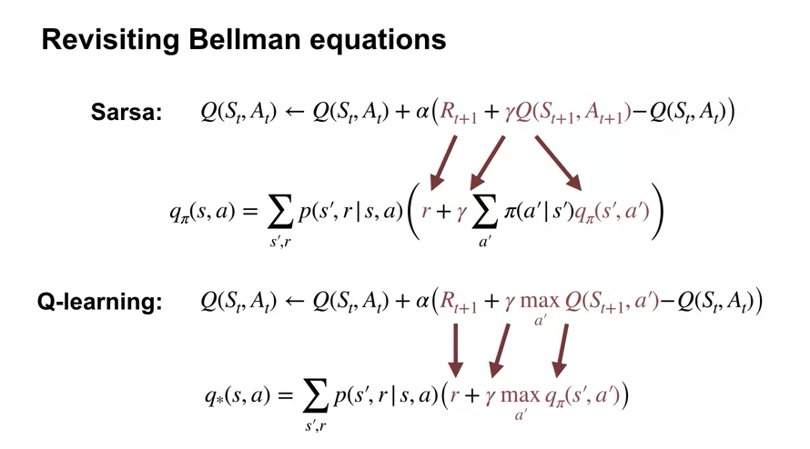
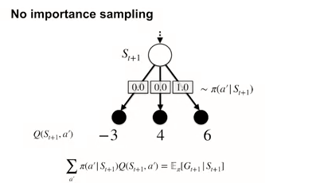
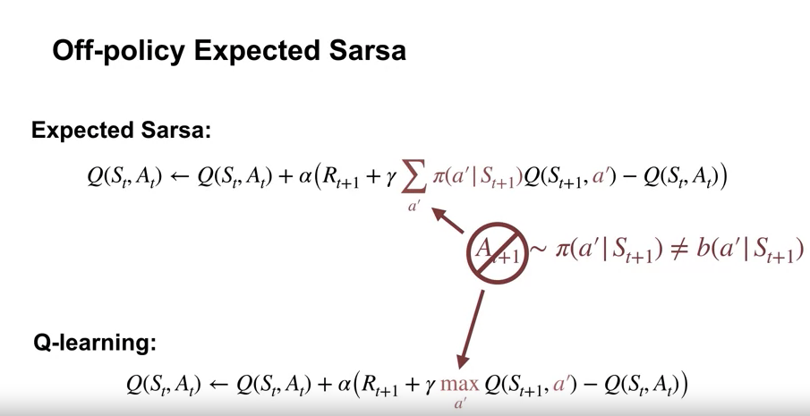

- Sarsa: On-policy TD Control
- Q-learning: Off-policy TD Control
- Maximization Bias and Double Learning
- Games, Afterstates, and Other Special Cases
- Summary
- Sarsa: GPI with TD
- Sarsa in the Windy Grid World
- What is Q-learning
- Q-learning in the Windy Grid World
- How is Q-learning off-policy
- Expected Sarsa
- Expected Sarsa in the Cliff World
- Generality of Expected Sarsa
- Week3 Summary
- Program Assignment
Sarsa: On-policy TD Control
$Q(S_t,A_t) \leftarrow Q(S_t,A_t) + \alpha(R_{t+1} + \gammaQ(S_{t+1},A_{t+1}) - Q(S_t,A_t))$
This update is done after every transition from a nonterminal state $S_t$. If $S_{t+1}$ is terminal, then $Q(S_{t+1},A_{t+1})$ is defined as zero.
Q-learning: Off-policy TD Control
We can see that, we use original Q and policy to generate next action. But here, we use max Q value as next choice. We still follow policy in the next choince (data generation) in SARSA. Thus SARSA is on-policy. However, when we generate next choice, in Q-learning, instead, we use the best next choice.
This dramatically simplifies the analysis of the algorithm and enabled early convergence proofs.
Expected Sarsa

Given the next state, $S_{t+1}$, this algorithm moves deterministically in the same direction as Sarsa moves in expectation.
the expected SARSA eliminates the variance due to the SARSA random choice of $A_{t+1}$. Given the same amount of experience we might expect it to perform slightly better than Sarsa, and indeed it generally does.

In such cases, Expected Sarsa can safely set $\alpha$ = 1 without su↵ering any degradation of asymptotic performance, whereas Sarsa can only perform well in the long run at a small value of $\alpha$, at which short-term performance is poor.
Expected Sarsa subsumes and generalizes Q-learning while reliably improving over Sarsa. Except for the small additional computational cost, Expected Sarsa may completely dominate both of the other more-well-known TD control algorithms.
Maximization Bias and Double Learning
a maximum over estimated values is used implicitly as an estimate of the maxim um value, which can lead to a significant positive bias.
The maximum of the true values is zero, but the maximum of the estimates is positive, a positive bias. We call this maximization bias.
In my comprehension here, because the maximization agent do not know left choice’s mean is -0.1. it need to explore more, it has more bias to do the exploration?
We could then use one estimate, say $Q_1$, to determine the maximizing action $A* = argmaxQ_1(a)$, and the other, $Q_2$, to provide the estimate of its value, $Q_2(A) = Q_2(argmaxa Q_1(a))$. This estimate will then be unbiased in the sense that $E[Q_2(A)] = q(A*)$. We can also repeat the process with the role of the two estimates reversed to yield a second unbiased estimate
If the coin comes up heads, the update is

If the coin comes up tails, then the same update is done with Q1 and Q2 switched, so that $Q_2$ is updated.
Games, Afterstates, and Other Special Cases
but the state-value function used in tic-tac-toe evaluates board positions after the agent has made its move. Let us call these afterstates, and value functions over these. We know for each possible chess move what the resulting position will be, but not how our opponent will reply. Afterstate value functions are a natural way to take advantage of this kind of knowledge and thereby produce a more e�cient learning method. Afterstates arise in many tasks, not just games.
Summary
There is a third way in which TD methods can be extended to control which we did not include in this chapter, called actor–critic methods. These methods are covered in full in Chapter 13.
This is probably due to their great simplicity: they can be applied online, with a minimal amount of computation, to experience generated from interaction with an environment; they can be expressed nearly completely by single equations that can be implemented with small computer programs.
The special cases of TD methods introduced in the present chapter should rightly be called one-step, tabular, model-freeTD methods.
TD methods may be relevant to predicting financial data, life spans, election outcomes, weather patterns, animal behavior, demands on power stations, or customer purchases.
Sarsa: GPI with TD
Sarsa in the Windy Grid World
Windy Gridworld
Notice the episode completion rate stops increasing. This means the agents policy hovers around the optimal policy and won’t be exactly optimal, because of exploration. Notice that Monte Carlo methods would not be a great fit here. This is because many policies do not lead to termination. Monte Carlo methods only learn when an episode terminates. So a deterministic policy might get trapped and never learn a good policy in this gridworld. For example, if the policy took the left action in the start state, it would never terminate.
What is Q-learning?

Sarsa is sample-based version of policy iteration which uses Bellman equations for action values, that each depend on a fixed policy. Q-learning is a sample-based version of value iteration which iteratively applies the Bellman optimality equation.
So policy iteration vs value iteration? For the policy iteration, the value function is the last policy’s value function (on policy) because we use last policy to generate the sample values. We can use some function to do the earl stop, because maybe currently, greedy is the best choice, we can use best choice to update value function to generate better update (samples) (off policy) and this is value iteration. Q-learning is one of the values iteration.
Q-learning in the Windy Grid World
How is Q-learning off-policy?
If we know the Q-learning update using the $\pi*$, why do we not see any importance sampling ratio?
Because 
We can see only the best choice have the probability zero, thus we do not need the importance sampling.
Expected Sarsa
cosume more computation resources with lower variance
Expected Sarsa in the Cliff World
Sarsa performed better than Q learning on this domain because Sarsa’s policy accounted for its own exploration.
Expected Sarsa’s long-term behavior is unaffected by alpha. Its updates are deterministic in this example.
Therefore the step size only determines how quickly the estimates approach their target values. Sarsa behaves quite differently here, it even fails to converge for larger values of alpha. As alpha decreases, Sarsa’s long run performance approaches expected Sarsa’s.
Generality of Expected SARSA

when pi is greedy, then Q learning == Sarsa.
expectation over actions is computed independently of the action actually selected in the next state. In fact, Pi need not be equal to the behavior policy. This means that Expected Sarsa, like Q-learning, can be used to learn off-policy without importance sampling.
Program Assignment
In the assignment, I only learn a matplotlib’s function. The fill between can draw a interval or fluctuation for the line. The results is really great.